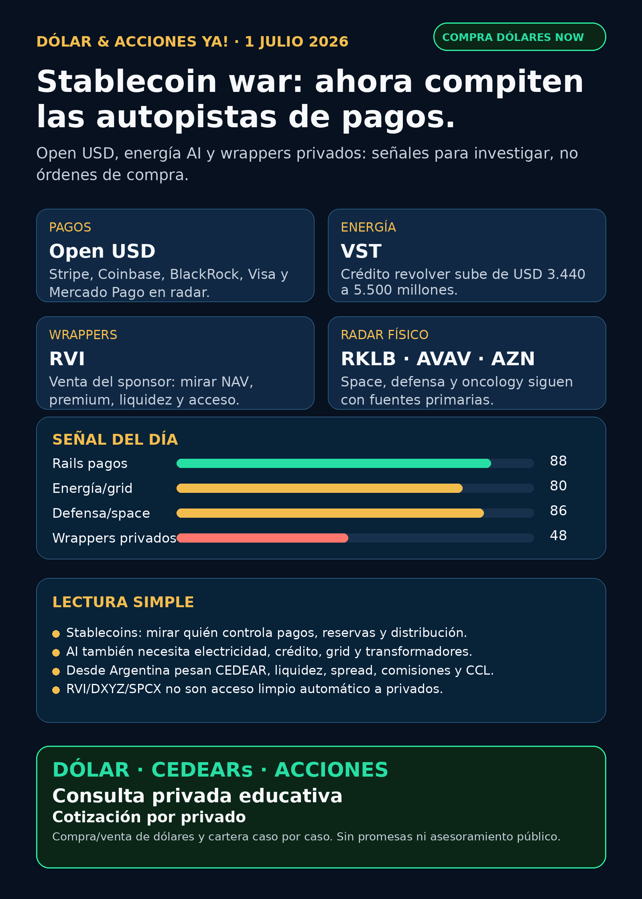

Stablecoin war: ahora compiten las autopistas de pagos.
Reporte educativo para Argentina: Open USD, energía AI, wrappers privados y qué mirar antes de operar desde broker local o global.
Texto WhatsApp
Placa del día

Dólar & Acciones YA — 01/07
Lectura simple del día
La señal más útil de hoy no fue “otra acción de AI que vuela”. Fue algo más de fondo: la guerra por las stablecoins y los pagos globales. Open Standard presentó Open USD, con más de 140 participantes listados, incluyendo Stripe, Visa, Mastercard, BlackRock, BNY, Coinbase, Google, Shopify, Mercado Libre y Mercado Pago. En criollo: el negocio no es sólo emitir un token; el negocio grande puede ser controlar la autopista de pagos, las reservas, la distribución y quién se queda con el rendimiento de esa caja.
La segunda señal viene de energía: Vistra (VST) aumentó sus compromisos de crédito revolver de USD 3.440 millones a USD 5.500 millones. No es un contrato de data center y no prueba demanda AI por sí solo. Pero sí muestra algo clave: para jugar el trade de electricidad, gas, nuclear, commodities y data centers, las empresas necesitan balance, crédito y capacidad de financiar volatilidad.
Y hay una alerta de instrumentos: Robinhood Markets vendió 700.000 shares de RVI a USD 30,92. Eso no significa que el fondo sea “malo”; significa que los wrappers de empresas privadas se analizan por NAV, premium/descuento, liquidez, sponsor sales y acceso real, no por FOMO de SpaceX/OpenAI.
Esto es research educativo. No es asesoramiento financiero ni orden de compra/venta.
Tesis central
El próximo moat financiero no está sólo en chips ni en modelos de AI: está en infraestructura difícil de copiar. Esa infraestructura puede ser física —electricidad, transformadores, satélites, defensa, data centers— o financiera —stablecoins, reservas, rails de pago, distribución y compliance.
Para Argentina, la pregunta correcta no es “¿sube o baja tal ticker?”. Hay cuatro filtros separados:
- Buena empresa o buena tesis: negocio, moat, caja, ejecución y riesgo.
- Buen precio: valuación, timing y margen de seguridad.
- Buen instrumento: acción global, CEDEAR, ETF, fondo cerrado, bono o wrapper.
- Buena ejecución local: MEP/CCL, spread, volumen, comisiones, impuestos y tamaño de posición.
Señales educativas del día — no ranking de compra
1) Open USD — stablecoin war y autopistas de pagos
- Señal: Open Standard anunció Open USD el 30/06/2026. La propuesta oficial habla de mint/redeem sin costo artificial, earnings de reservas para partners menos management fee y gobernanza colaborativa. Lista más de 140 participantes, incluyendo Visa, Stripe, Mastercard, American Express, Fiserv, Adyen, BlackRock, BNY, Standard Chartered, Coinbase, Base, Solana, Google, IBM, Shopify, Mercado Libre y Mercado Pago.
- Fuente primaria: https://joinopenstandard.com/blog/introducing-open-usd
- Fuente secundaria: https://www.coindesk.com/business/2026/06/30/circle-slides-8-as-stripe-coinbase-and-blackrock-back-rival-stablecoin-network
- Lectura en criollo: si una stablecoin se vuelve commodity, el margen se mueve a distribución, reservas, merchants, exchanges, bancos y billeteras. Esto puede presionar la narrativa de moat cerrado de emisores tipo Circle, pero no convierte automáticamente a ningún ticker en compra.
- Proxies públicos a mirar:
CRCL,COIN,BLK,V,MA,MELI/ Mercado Pago. Son proxies educativos, no recomendación. - Accionable internacional/global: radar para análisis humano; revisar precio, valuación, reacción de mercado, exposición real y regulación.
- Accionable local Argentina: no operar “el token”. Para inversores locales, la vía sería estudiar CEDEARs/acciones/proxies disponibles y liquidez, si existen.
- Riesgo: regulación stablecoin, competencia de bancos/fintechs, economics reales de reservas, adopción y presión sobre fees.
2) VST — energía AI necesita balance, no sólo narrativa
- Señal: Vistra Operations presentó 8-K: aumentó los aggregate revolving credit commitments de USD 3.440 millones a USD 5.500 millones bajo su Credit Agreement, efectivo 24/06/2026. También ajustó garantías, covenants y el Commodity-Linked Credit Agreement.
- Fuente: https://www.sec.gov/Archives/edgar/data/1692819/000114036126026944/ef20077059_8k.htm
- Lectura en criollo: si AI consume más electricidad, las empresas de generación no ganan sólo por “demanda”. Necesitan crédito, capital, manejo de commodities, garantías y capacidad de financiar plantas, contratos y volatilidad.
- Estado: señal de flexibilidad financiera / en radar.
- Accionable internacional/global: candidato para seguimiento de energía/data-center power; falta valuación, deuda neta, mix nuclear/gas/merchant power y riesgo regulatorio.
- Accionable local Argentina: acceso por CEDEAR no asumido; si se opera desde Argentina, verificar instrumento, liquidez, CCL, spread y comisiones.
- Riesgo: no es contrato AI, no es guidance de revenue, y el merchant power tiene volatilidad de precios y regulación.
3) RVI — alerta de wrapper privado, no operating company
- Señal: Form 4 del 29/06/2026: Robinhood Markets informó venta de 700.000 common shares de beneficial interest de
RVIel 25/06/2026 a USD 30,92, quedando con 13.376.136 shares. - Fuente: https://www.sec.gov/Archives/edgar/data/2085091/000178387926000085/wk-form4_1782768825.xml
- Lectura en criollo: RVI no es una empresa productiva tipo Nvidia o Rocket Lab. Es un fondo/wrapper de private markets. Antes de entusiasmarse con “acceso a privados”, hay que mirar NAV, premium/descuento, holdings, lockups, ventas del sponsor, float, liquidez y comisiones.
- Estado: vigilar / riesgo de instrumento.
- Accionable internacional/global: no accionable sin NAV actualizado y holdings.
- Accionable local Argentina: no asumir disponibilidad ni liquidez local. Puede no ser práctico o tener spread/costos altos.
- Riesgo: el precio de mercado puede separarse mucho del valor de los activos; private marks pueden ser difíciles de auditar.
4) RKLB + IRDM — space sigue como señal fuerte 24–72h
- Señal vigente: Rocket Lab acordó adquirir Iridium por un deal anunciado el 29/06/2026. La tesis: pasar de launch/cohetes a una plataforma espacial integrada con red satelital, espectro, clientes y revenue recurrente.
- Fuentes: https://www.sec.gov/Archives/edgar/data/1819994/000175392626001085/g085783_8k.htm y https://www.sec.gov/Archives/edgar/data/1418819/000110465926078482/tm2619278d1_8k.htm
- Lectura: fortalece la tesis de space infrastructure, pero también sube complejidad: deuda/bridge, dilución, S-4, aprobaciones, integración y ejecución hasta el cierre esperado.
- Estado: señal fortalecida con riesgo alto.
- Argentina: acceso/CEDEAR/spread/liquidez no verificados para ejecución local.
5) AVAV — defensa física con revenue y backlog, más red flag contable
- Señal vigente: AeroVironment informó FY2026 revenue USD 1.976,8 millones, bookings USD 2.700 millones, funded backlog USD 1.200 millones y guía FY2027. El 10-K mantiene material weaknesses vinculadas a BlueHalo/integración.
- Fuente: https://www.sec.gov/Archives/edgar/data/1368622/000110465926078824/avav-20260629xex99d1.htm
- Lectura: defensa/guerra física es un carril real: drones, precision strike, counter-UAS, directed energy, space/cyber y contratos gobierno. Pero no alcanza con “hay guerra”: mirar backlog, márgenes, integración, material weaknesses, DoD y supply chain.
- Estado: fortalece tesis / vigilar riesgo contable.
- Argentina: instrumento local no asumido; puede requerir broker global o ETF defensivo a verificar.
6) AZN — pharma hoy fue oncología, no GLP-1
- Señal: AstraZeneca/Daiichi Sankyo informaron aprobación europea de Enhertu para tumores sólidos HER2+ y recomendación positiva de CHMP para Datroway en metastatic TNBC 1L. La recomendación CHMP no es lo mismo que aprobación final de European Commission.
- Fuentes: https://www.sec.gov/Archives/edgar/data/901832/000165495426006251/a1370k.htm y https://www.sec.gov/Archives/edgar/data/901832/000165495426006239/a0148k.htm
- Lectura: salud no es sólo Ozempic/GLP-1. Oncology de precisión puede sostener pricing y moat si los labels se expanden con reguladores.
- Estado: fortalece tesis oncology.
- Argentina: ADR/CEDEAR/acceso y liquidez a verificar.
Watchlist base — cobertura explícita
- RKLB: señal fuerte vigente por Iridium; fortalece tesis, con riesgo alto de deuda/dilución/aprobaciones.
- NVDA: 8-K nuevo sólo de Annual Meeting/governance; sin señal operacional nueva de chips, revenue o data centers. Fuente: https://www.sec.gov/Archives/edgar/data/1045810/000104581026000056/nvda-20260624.htm
- PLTR: sin fuente primaria nueva fuerte; no elevar titulares secundarios.
- TSM: sin señal nueva posterior al capex/capital appropriations ya indexado.
- MU: sin filing nuevo posterior al 10-Q/resultados HBM ya indexados.
- GOOGL/GOOG: sin señal primaria nueva fuerte; sigue estructural por cloud, TPUs y data centers.
- AAPL: sin señal nueva fuerte.
- HOOD: señal indirecta por
RVIForm 4; no nuevo evento operacional de HOOD. - TSLA: autonomy/robotaxi revisado; sin fuente primaria nueva fuerte.
- ASML: moat EUV/High-NA estructural; sin evento fresco.
- Gold / GLD / GOLD / B: sigue ambiguo; no publicar “oro” hasta confirmar instrumento exacto.
- RVI: Form 4 nuevo de venta del sponsor; vigilar NAV/premium/liquidez.
- SPCX / SpaceX: hubo ruido secundario sobre IPO/FAA/trading frenzy, pero sin filing SEC nuevo usable esta corrida; mantener en auditoría.
- CBRS / Cerebras: sin filing nuevo posterior a Q1/OpenAI-AWS.
- AVGO/QCOM/SNDK: revisados; sin señal primaria nueva fuerte esta mañana.
Energía, grid, transformadores y power hardware
El carril de energía sigue arriba porque el segundo peaje de AI es electricidad física: transformadores, subestaciones, switchgear, transmisión, generación, cooling, permisos y financiación.
- VST: señal nueva de crédito: revolver de USD 3.440 millones a USD 5.500 millones. Vigilar flexibilidad financiera; no venderlo como contrato AI.
- GEV / GE Vernova: proxy público limpio para electrification/data-center power; sin filing nuevo fuerte hoy.
- Hitachi Energy / Hitachi (
6501.T,HTHIY): radar por grid y power semiconductors; acceso Argentina pendiente. - Siemens Energy (
ENR.DE): revisar como Siemens Energy, no confundir con Siemens AG. - HD Hyundai Electric (
267260.KS) y Hyosung Heavy Industries/HICO (298040.KS): radar por breakers, switchgear y transformadores; acceso Corea/OTC/Argentina pendiente. - Virginia Transformer y Delta Star: privadas/no accionables directo; sirven para entender bottleneck industrial.
- Argentina energía (
YPF,TGS,PAMP,CEPU): YPF recompra de notas sigue vigente;PAMtuvo Form 4 de Mindlin, pero no señal operativa fuerte; TGS/CEPU sin señal primaria nueva fuerte. - Nuclear/uranio: revisado sin catalizador nuevo superior.
Pharma / salud
- AZN / oncology: señal fuerte vigente por Enhertu + Datroway.
- NVO / GLP-1: recompra ya verificada; sin catalizador clínico nuevo.
- LLY / orforglipron / Foundayo: sigue en auditoría; no hay fuente primaria FDA/Lilly usable. No publicar como aprobado.
- MRK/Astellas / Keytruda + Padcev: requiere primaria company/EMA antes de elevar.
- PFE/MRK/AMGN/REGN/biotech M&A: revisado sin señal primaria nueva fuerte.
Defensa, guerra física y aerospace industrial
- AVAV: señal fuerte vigente por revenue, bookings, backlog y guía; riesgo contable/integración BlueHalo.
- GE Aerospace: revisado; moat estructural por motores/aftermarket, sin filing/contrato nuevo fuerte para titular hoy.
- RTX, LMT, NOC, GD, HWM, KTOS, BA, ITA/XAR: revisados; sin señal primaria más fuerte que AVAV/RKLB.
- Lectura: defensa real se mide por contratos, backlog, presupuesto, margen, supply chain e integración; no por titulares de guerra sueltos.
Autonomous mobility / physical AI
Tesla, Waymo/Alphabet, Uber, Zoox/Amazon y Joby fueron revisados. No apareció señal primaria nueva fuerte para elevar. Estado: revisado sin señal fuerte nueva.
Space, private markets y wrappers
- RKLB/IRDM: sigue como evento central de space por adquisición propuesta.
- SPCX / SpaceX: radar alto educativo, pero sin filing nuevo esta corrida; no accionable local automático.
- DXYZ / RVI / ARKVX / AGIX / XOVR / VCX / Forge/FAPMI: sirven para estudiar exposición a private tech, pero no son acceso limpio automático a SpaceX/OpenAI. Falta NAV, premium/descuento, holdings, liquidez, custodia, impuestos y acceso local.
Crypto gobernado
Open USD entra como crypto gobernado / infraestructura / rails de pagos. No es un token trade ni una invitación a operar memecoins. Para Stock Radar, el carril crypto aceptable es: BTC/ETH/SOL, ETFs/proxies públicos, stablecoin rails, exchanges, pagos y métricas verificables.
Capa Argentina: dólar, MEP/CCL, CEDEARs e instrumento
Cotizaciones públicas verificadas 01/07 08:45 Argentina:
- BlueLytics: oficial compra/venta $1.451 / $1.502; blue compra/venta $1.482 / $1.515. Timestamp: 2026-07-01 08:45 Argentina.
- CriptoYa: USDT compra/venta aprox. $1.556,50 / $1.570. Timestamp: 2026-07-01 08:45 Argentina.
- MEP/CCL AL30 de CriptoYa: las marcas disponibles aparecieron con timestamp de cierre 26/06, así que no las trato como cotización intradiaria fresca.
Para Argentina, antes de operar cualquier tesis global hay que mirar:
1. CEDEAR o acción local: disponibilidad, ratio, volumen y spread.
2. MEP/CCL implícito: puede cambiar el resultado aunque el subyacente afuera no se mueva.
3. Comisiones/derechos/impuestos: reducen el margen real.
4. Liquidez: salir de un instrumento ilíquido puede costar caro.
5. Tamaño de posición: buena tesis no significa poner demasiado peso.
La cartera de Ricardo fue liquidada, devuelta y terminada según estado informado por Charly el 24/06. No hay posiciones activas ni P&L real que reportar. Este radar queda como vigilancia para próxima compra humana o nuevo inversionista.
Red flags / hype para ignorar
- “Open USD = comprar cualquier token”: falso. La tesis es infraestructura de pagos y proxies públicos, no casino.
- “VST aumentó crédito = contrato AI”: falso. Es flexibilidad financiera, no revenue asegurado.
- “RVI da acceso limpio a privados”: incompleto. Falta NAV, holdings, premium/descuento, liquidez y ventas internas.
- “LLY/FDA aprobó una pastilla GLP-1”: no publicar sin fuente primaria FDA/Lilly.
- “SpaceX/SPCX ya es fácil desde Argentina”: no. Acción, bono, wrapper y fondo cerrado son instrumentos distintos.
- “GOLD es oro/Barrick/ETF”: instrumento ambiguo hasta confirmar.
- “Transformadores coreanos son fáciles de operar”: Corea/OTC/privadas requieren verificación de acceso, liquidez y costos.
Recibo visible de cobertura
Revisado hoy: watchlist base, AI infra/semis/memoria, energía/grid/transformadores, energéticas argentinas, pharma/GLP-1, defensa/aeroespacial, space/SPCX/RKLB/wrappers, fintech/AI agents, autonomous mobility/physical AI y crypto gobernado. Donde no hubo señal fuerte, quedó marcado como revisado sin titular.
Qué mirar después
1. Open USD: adopción real, economics de reservas, presión competitiva sobre CRCL, reacción de COIN, bancos, Visa/Mastercard y Mercado Pago.
2. VST: deuda neta, exposición merchant power, mix nuclear/gas, capex y si aparecen contratos concretos de data centers.
3. RVI/DXYZ/SPCX: NAV, premium/descuento, holdings, sponsor sales, liquidez y acceso Argentina/US.
4. RKLB/IRDM: S-4, deuda/bridge, aprobaciones FCC/antitrust/foreign investment e integración.
5. AVAV: material weaknesses, integración BlueHalo, margen, organic vs acquired growth y nuevos contratos.
6. AZN: confirmación regulatoria final de Datroway por European Commission y avance comercial de Enhertu.
Servicio privado
Dólar · CEDEARs · Acciones · Consulta privada. Si querés comprar o vender dólares, invertir en acciones o pensar una estrategia financiera más personalizada, escribime por privado y lo vemos caso por caso. Cotización sujeta a confirmación al momento de operar.
Disclaimer
Este reporte es informativo y educativo. No es asesoramiento financiero personalizado ni una orden de compra o venta. Las decisiones reales dependen de precio, instrumento, liquidez, horizonte, monto, impuestos, comisiones, CCL/MEP y tolerancia al riesgo.
Fuentes principales
- Open Standard / Open USD: https://joinopenstandard.com/blog/introducing-open-usd
- CoinDesk sobre Open USD / stablecoin network: https://www.coindesk.com/business/2026/06/30/circle-slides-8-as-stripe-coinbase-and-blackrock-back-rival-stablecoin-network
- Vistra SEC 8-K: https://www.sec.gov/Archives/edgar/data/1692819/000114036126026944/ef20077059_8k.htm
- RVI SEC Form 4: https://www.sec.gov/Archives/edgar/data/2085091/000178387926000085/wk-form4_1782768825.xml
- Rocket Lab SEC 8-K: https://www.sec.gov/Archives/edgar/data/1819994/000175392626001085/g085783_8k.htm
- Iridium SEC 8-K: https://www.sec.gov/Archives/edgar/data/1418819/000110465926078482/tm2619278d1_8k.htm
- AeroVironment resultados SEC EX-99.1: https://www.sec.gov/Archives/edgar/data/1368622/000110465926078824/avav-20260629xex99d1.htm
- AstraZeneca Enhertu SEC 6-K: https://www.sec.gov/Archives/edgar/data/901832/000165495426006251/a1370k.htm
- AstraZeneca Datroway SEC 6-K: https://www.sec.gov/Archives/edgar/data/901832/000165495426006239/a0148k.htm
- NVIDIA Annual Meeting 8-K: https://www.sec.gov/Archives/edgar/data/1045810/000104581026000056/nvda-20260624.htm
- BlueLytics dólar público: https://api.bluelytics.com.ar/v2/latest
- CriptoYa dólar público: https://criptoya.com/api/dolar